The Metropolis-Hastings Algorithm¶
 -algebra
-algebra 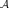
on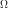
, a Markov chain is a process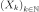
such that
An example is the random walk for which
 where the steps
where the steps
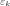
are independent and identically distributed. is
a mapping
is
a mapping 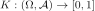
such that is measurable;
is measurable; is a probability
distribution on .
is a probability
distribution on .
The kernel  has density
has density  if
if
 .
.
if
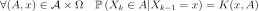
. on with
initial distribution  (that is
(that is 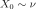
):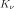
denotes the probability distribution of the Markov Chain ; denotes the probability distribution of
denotes the probability distribution of  (
(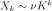
);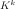
denotes the mapping defined by for all
for all
 .
.
 if
if
Then the notation used here is
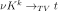
. be a (target)
distribution on , then a transition kernel
is said to be:- -invariant if
 ;
; - -irreducible if,
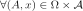
such that ,
, 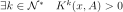
holds.
Markov Chain Monte-Carlo techniques allows to sample and integrate
according to a distribution which is only known up to a
multiplicative constant. This situation is common in Bayesian statistics
where the “target” distribution, the posterior one
 , is proportional
to the product of prior and likelihood: see equation (1).
, is proportional
to the product of prior and likelihood: see equation (1).
In particular, given a “target” distribution and a
-irreducible kernel transition  , the
Metropolis-Hastings algorithm produces a Markov chain
of distribution with the
following properties:
, the
Metropolis-Hastings algorithm produces a Markov chain
of distribution with the
following properties:
the transition kernel of the Markov chain is
-invariant;;
the Markov chain satisfies the ergodic theorem: let
 be
a real-valued function such that
be
a real-valued function such that
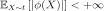
, then, whatever the initial distribution is:
![\begin{aligned}
\displaystyle\frac{1}{n} \sum_{k=1}^n \: \phi(X_k) \tendto{k}{+\infty} \mathbb{E}_{X\sim{}t}\left[ |\phi(X)| \right]
\mbox{ almost surely}.
\end{aligned}](../../_images/math/5dd7c3ee6014e77730002e6cd5d09c85e59cc8d6.svg)
In that sense, simulating amounts to
sampling according to and can be used to integrate relatively
to the probability measure . Let us remark that the ergodic
theorem implies that
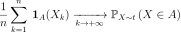
almost surely.By abusing the notation,
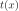
represents, in the remainder of this section, a function of which is proportional to the PDF
of the target distribution . Given a transition kernel
of density
which is proportional to the PDF
of the target distribution . Given a transition kernel
of density  , the scheme of the Metropolis-Hastings
algorithm is the following (lower case letters are used hereafter for
both random variables and realizations as usual in the Bayesian
literature):
, the scheme of the Metropolis-Hastings
algorithm is the following (lower case letters are used hereafter for
both random variables and realizations as usual in the Bayesian
literature):
Draw
 and set
and set  .
.Draw a candidate for
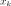
according to the given transition kernel:  .
.Compute the ratio
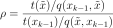
.Draw
![u \sim \cU([0, 1])](../../_images/math/31d75f38e9aa1a50f00102b01c398220101041c8.svg) ; if
; if  then set
then set
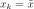
, otherwise set .
.Set
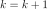
and go back to 1).
Of course, if is replaced by a different function of
which is proportional to it, the algorithm keeps unchanged, since
only takes part in the latter in the ratio
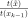
. Moreover, if proposes
some candidates in a uniform manner (constant density ), the
candidate  is accepted according to a ratio
is accepted according to a ratio
 which reduces to the previous “natural” ratio
of PDF. The introduction of
in the ratio prevents from the bias of a
non-uniform proposition of candidates which would favor some areas of
.
which reduces to the previous “natural” ratio
of PDF. The introduction of
in the ratio prevents from the bias of a
non-uniform proposition of candidates which would favor some areas of
.
The -invariance is ensured by the symmetry of the expression of
(-reversibility).
In practice, is specified as a random walk
( such that
such that  ) or as a
independent sampling (
) or as a
independent sampling ( such that
such that
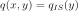
), or as a mixture of random walk and independent sampling. is the
-irreducibility. Moreover, for efficient convergence,
has to be chosen so as to explore quickly the whole support
of without conducting to a too small acceptance ratio (the
ratio of accepted candidates ). It is usually
recommended that this latter ratio is about  but such a
ratio is neither a warranty of efficiency, nor a substitute to a
convergence diagnosis.
but such a
ratio is neither a warranty of efficiency, nor a substitute to a
convergence diagnosis.API:
Examples:
References:
Robert, C.P. and Casella, G. (2004). Monte Carlo Statistical Methods (Second Edition), Springer.
Meyn, S. and Tweedie R.L. (2009). Markov Chains ans Stochastic Stability (Second Edition), Cambridge University Press.